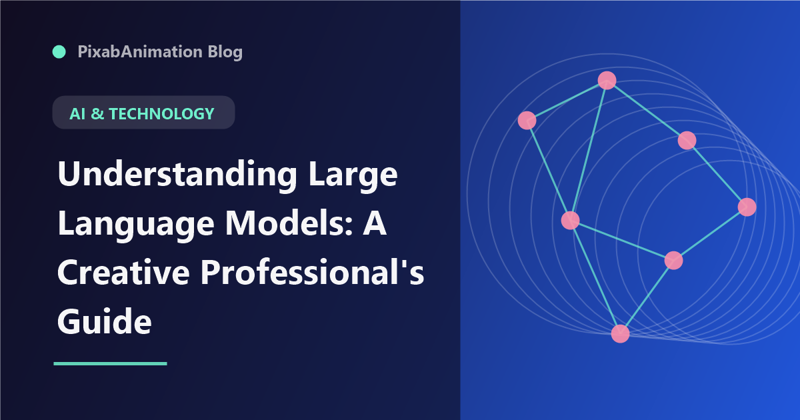

Understanding Large Language Models: A Creative Professional's Guide

Large language models (LLMs) have become one of the most transformative technologies of the decade, yet many creative professionals find them mysterious or intimidating. This guide demystifies LLMs — explaining how they work, what they can and cannot do, and how creative professionals can leverage them effectively in their work.
Understanding LLMs is becoming increasingly important for creative professionals. Whether you are a designer, writer, video editor, or motion graphics artist, LLMs are being integrated into the tools you use every day. Knowing how they work helps you use them more effectively and critically evaluate their outputs.
What Is a Large Language Model?
At its core, a large language model is a type of neural network trained on vast amounts of text data to predict and generate human-like text. The "large" refers to the scale of both the training data and the model itself — modern LLMs are trained on hundreds of billions of words and contain hundreds of billions of parameters (the mathematical weights that determine how the model processes input).
The training process involves showing the model massive amounts of text from the internet, books, academic papers, and other sources. Through this training, the model learns statistical patterns in language — grammar, facts, reasoning patterns, writing styles, and conceptual relationships. It does not "understand" language the way humans do, but it has learned to generate text that is statistically consistent with its training data.
How Creative Professionals Can Use LLMs
LLMs offer numerous applications for creative professionals. For motion designers and video creators, LLMs can generate script drafts and voiceover copy, create detailed shot descriptions and storyboard notes, brainstorm creative concepts and visual metaphors, draft project briefs and client communications, summarize research and competitor analysis, and generate metadata, tags, and SEO descriptions for published work.
The key to effective LLM use is understanding that the model generates plausible text based on patterns, not verified facts or original creative insights. This means LLM outputs should always be reviewed, refined, and customized by a human professional who applies their expertise and judgment. The best creative workflows use LLMs for ideation and drafting, with human creatives providing direction, curation, and refinement.
Prompt Engineering for Creative Tasks
Prompt engineering — the practice of crafting effective inputs for LLMs — has emerged as an important skill. For creative tasks, effective prompts typically include context about the project and audience, the desired output format and length, specific creative constraints or requirements, examples of the desired style or approach, and role-playing instructions ("Act as a creative director." or "Write in the style of.").
Iterative prompting — refining your prompt based on the model's responses — produces better results than trying to get the perfect output on the first attempt. Start with a broad prompt, review the output, identify what works and what does not, and refine your prompt to guide the model toward better results.
Limitations and Considerations
Creative professionals should be aware of important LLM limitations. Models can produce plausible-sounding but incorrect information (hallucinations). They reflect biases present in their training data. They lack true understanding and cannot make genuine creative judgments. They have limited context windows and may lose track of earlier instructions in long conversations. They cannot generate truly novel creative ideas — they recombine patterns from their training data.
Despite these limitations, LLMs are powerful creative tools when used appropriately. Understanding both their capabilities and constraints enables creative professionals to leverage them effectively while maintaining creative control and quality standards.
"LLMs are not creative replacements — they are creative amplifiers. They handle the combinatorial work of generating possibilities, freeing human creatives to focus on the evaluative work of selecting, refining, and imbuing work with meaning." — Creative Technology Report, 2026
As LLMs continue to evolve, their integration into creative tools will deepen. Creative professionals who understand these models and develop effective workflows around them will have significant advantages in efficiency, ideation, and creative exploration.